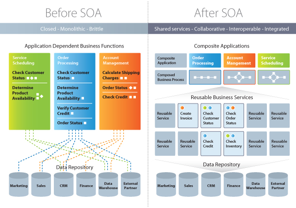
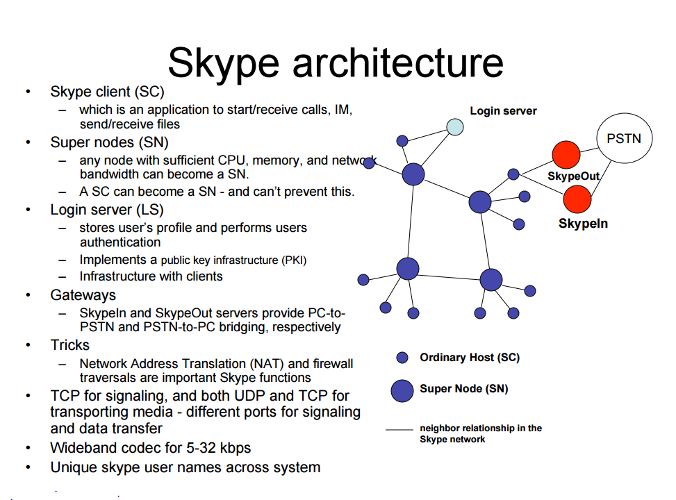

Introduction
to software architectures
for non-IT people
Agenda
- about the presenter
- software architectures
- introduction and definition
- documentation of the architecture
- common patterns
- tasks of a software architect
- questions & answers
- test
Who am I

- Peter Bagrij, Lead Software Engineer
- currently working for a Swiss investment bank, developing an integrated trading platform which deals with structured products
- 1 year in EPAM, almost 11 years in software development
- architect in 3 projects (Opal, CAQS, MIS-NG)
- technologist by heart, Lean philosophy
- UPSA peter_bagrij@epam.com
Hardware vs. software
- hardware
- physical components connected to the computer
- such as RAM, harddisk, CPU, keyboard, mouse
- software
- set of instructions which runs on the hardware
- enables the user to interact with the computer in order to achieve a certain task
to make it simple the hardware would be the body and the software would be the brain
How a software is built up - machine code
CPU can directly execute machine code. The available instruction set depends on the CPU. There is an opertaion for MOVing, copying a value from one place to another, there is another for JMPing to a different address or CMParing two values. The full list of supported operations for X86 based CPUs can be found here

It is hard to work with native instruction codes :-(
Higher level programming languages were invented :-)
How a software is built up - compilers
A compiler is a special program that processes statements written in a particular programming language and turns them into machine language or "code" that a computer's processor uses. Typically, a programmer writes language statements in a language such as Pascal or C, one line at a time using an editor . The file that is created contains the so called the source statements. The programmer then runs the appropriate language compiler, specifying the name of the file that contains the source statements.

How a software is built up - programming languages
- statements
- functions or methods
- classes
- packages
- modules

Software development lifecycle, RfP Process

Software architecture - definitions #1
The software architecture of a program or computing system is a depiction of the system that aids in the understanding of how the system will behave.
Software application architecture is the process of defining a structured solution that meets all of the technical and operational requirements, while optimizing common quality attributes such as performance, security, and manageability. It involves a series of decisions based on a wide range of factors, and each of these decisions can have considerable impact on the quality, performance, maintainability, and overall success of the application.
Software architecture - definitions #2
Software architecture serves as the blueprint for both the system and the project developing it, defining the work assignments that must be carried out by design and implementation teams. The architecture is the primary carrier of system qualities such as performance, modifiability, and security, none of which can be achieved without a unifying architectural vision. Architecture is an artifact for early analysis to make sure that a design approach will yield an acceptable system. By building effective architecture, you can identify design risks and mitigate them early in the development process
Software architecture encompasses the set of significant decisions about the organization of a software system including the selection of the structural elements and their interfaces by which the system is composed; behavior as specified in collaboration among those elements; composition of these structural and behavioral elements into larger subsystems; and an architectural style that guides this organization. Software architecture also involves functionality, usability, resilience, performance, reuse, comprehensibility, economic and technology constraints, trade-offs and aesthetic concerns
Software architecture - Mashup
- helps understanding how the system will behave
- meets requirements
- fulfills quality attributes
- decisions
- blueprint
- work assignment (scope)
- early
- identify design risks and mitigate them
- collaboration of elements
- composition of elements
- interface of elements
- constraints, trade-offs
Software architecture vs. design
Every architecture is design but not every design is architecture. Architect draws the boundary between architectural and non-architectural design.
| attribute | architecture | design |
| level of details | highest level of abstraction of the system | lower level, detailed view of the components, modules |
| rules / guidelines | defines the guidelines which framework, which methodology | uses the guidelines |
| timing | done earlier | done after the architecture |
| created by | the architect | the development team and / or the architect |
| primary concern | what is done, where it is done | how it is done |
| target audience | customer project manager developers | developers |
Architecture documentation
The result of the process is a document (sometimes accompanied by PoC). No de facto standard for the format, many templates are available: Arc42 or the SEI Software Architecture Document Template
- scope, requirements, main usecases
- assumptions
- architectural goals and constraints
- selected technologies
- 4+1 architectural view
- logical view
- process view
- implementation view
- deployment view
- usecase view
- non-functional requirements, quality attributes

Requirements, scope, main usecases
- helps to understand the context, the system boundaries
- what is in and what is out
- summary of all the requirements from different stakeholders (enduser, sponsor, operators)
- main usescases
Examples:
XYZ is a voice based communication application which works on TCP/IP networks. The user can login, and can see the available users. The users are identified by their username. The user can initiate voice call by clicking on the other online user. If the other party accepts the call then the voice connection is established and the users can talk to each other until one of them terminates the call by clicking on the hangup button. The users of the system can send text messages to each other. Text messages can be sent to users which are offline. In that case the user receives the message next time when it logs in into the system. The users are charged based on their phone calls. The user has a balance which can be filled up online using credit card. The online payment system is provided by ZZZ. The application must run on any windows 7 machine equipped with soundcard headset, but shall be easily portable to other operating systems...
requirements, scope, main usecases
Requirements, scope, main usecases

Assumptions
- the RfP process is often time limited
- there are details which could not be fully clarified
- assumptions must be differentiated from the requirements originated from the customer
- must be sorted out as soon as possible
- fills in the gaps
Examples:
- "which works on TCP/IP networks" Internet or intranet? We assume it shall work on Intranet
- "the users are identified by their usernames" How the user is authenticated? We assume they are authenticated with passwords
- "Text messages can be sent to users which are offline" What is the maximum size of text message? We assume it is 160 chars
Architectural goals and constraints
Contains further restrictions which are written in the requirements or derived from the requirements or gathered from the stakeholders. Often contains quality attributes.
Examples:
- The customer might have already a license of a audio encoder algorithm which he wants to use
- The customer has an exclusive contract with an infrastructure provider => they only maintain Windows based servers.
- The product owner mentioned during the kickoff that the system must support 1 million simultaneous voice calls. The network utilization can be concluded from this.
- It has to be integrated with an on-line payment system. If we plan to store credit card information then security is a concern.
Selected technologies
Section should list the selected technologies. Has strong impact on certain quality attributes. The knowledge of the team should be considered also (a technology without hands-on experience might be a risk). Probably this is the most exciting part for the vast majority of the architects :)
Examples:
- Programming Language, the performance-critical part of the sounds codec is written in C or ASM
- Environment the server side will use JBoss application server
- P2P architecture instead of regular client server
- frameworks (Spring, AngularJS, ExtJS) can be selected
- System-wide decision can be fixed like libraries for logging, exception handling, monitoring
- Testing tools
- Continuous Integration / Continuous Deployment tools
Logical view
Describes the most important classes, their organization in service packages and subsystems and the organization of these subsystems into layers. Also describes the most important use-case realizations, for example dynamic aspects of the architecture. Class diagrams may be included to illustrate relationships between architecturally significant classes, subsystems, packages and layers.

Process view
Describes the processes and threads involved in the system's execution, their interactions and configurations. Also describes the allocation of objects and classes to tasks.
- startup, shutdown
- concurrency and synchronization, deadlocks
- performance, throughput

Deployment view
Describes various physical nodes for the most typical platform configurations. Also describes the allocation of tasks (from the Process View) to physical nodes.

Implementation view
Describes the organization of static software modules (source code, data files, executables, documentation etc.) in the development environment in terms of:
- Packaging and layering
- Configuration management (ownership, release strategy etc.)
- Modeled using UML
- Components and classes
- Components and interfaces

Non-functional requirements
What is the difference between functional requirements and non-functional requirements?
Functional Requirements: specify the functionality of the system. (e.g. fields in a form)
Non-functional Requirements: specify the quality of the system, it is mostly related to the satisfaction of the stakeholders (user, operator, developer,...). ~abilities
Accessibility, •Audit and control, •Availability (see service level agreement), •Backup, •Capacity, • current and forecast, •Certification, •Compliance, •Configuration management, •Dependency on other parties, • Deployment, •Documentation, •Disaster recovery, •Efficiency (resource consumption for given load), • Effectiveness (resulting performance in relation to effort), •Emotional factors (like fun or absorbing or has "Wow! Factor"), • Environmental protection, •Escrow, •Exploitability, •Extensibility (adding features, and carry-forward of customizations at next major version upgrade), • Failure management, •Fault tolerance (e.g. Operational System Monitoring, •Measuring, •and Management), • Legal and licensing issues or patent-infringement-avoidability, •Interoperability, •Maintainability, • Modifiability, •Network topology, •Open source, •Operability, •Performance / response time (performance engineering), • Platform compatibility, •Price, •Privacy, •Portability, •Quality (e.g. faults discovered, •faults delivered, •fault removal efficacy), • Recovery / recoverability (e.g. mean time to recovery - MTTR), •Reliability (e.g. mean time between failures - MTBF, •or availability), • Reporting, •Resilience, •Resource constraints (processor speed, memory, disk space, network bandwidth, etc.), • Response time, •Reusability, •Robustness, •Safety or Factor of safety, •Scalability (horizontal, •vertical), • Security, •Software, •tools, •standards etc. Compatibility, •Stability, •Supportability, •Testability, • Usability by target user community, •User FriendlinessArchitecture patterns
Why is it good to think in patterns? Why to reinvent the wheel? Similar problems mostly have similar solutions.
- general, reusable solution to a commonly occurring problem
- similar to software design patterns but have a broader scope
- architecture pattern can reuse software design patterns
- address various issues such as computer hardware performance limitations, high availability and minimization of a business risk.
- Some patterns have been implemented as software frameworks
- Complex systems might use multiple architectural patterns at the same time
Client server
Client also known as front-end requests the data via the network from the server which is also known as the back-end. Can we name an example?

Examples:
- Outlook
- FTP Server
- ITunes
- Web applications (QPF, UPSA, PMC, etc)
- very popular
- separation of concerns
- multiple clients can connect to the same server
- the client and the server is separated and connected via the network
- load balancing: more servers serves the client
- thin client vs. thick client / rich client
- stateless vs. stateful back-ends
- 2-Tier architecture (presentation, data)
N-Tier architecture
The tiers are doing different things. They are separated preferably physically. The lower layers provide functionality to the upper layers via interfaces. Upper layers can be changed without touching the lowers, lower layers can be changed independently if the provided interface is not touched.

Service Oriented Architecture (SOA)
- monolithic applications <=> set of reusable services which can be composed to build an application
- useful enterprise level
- so the different departments don't have to develop the same thing on their own
- more generic, reusable solutions, no more department-centric solutions
- development effort and the solution can be shared between departments
- service providers aka components
- infrastructure aka bridge
- service consumers aka applications
Service Oriented Architecture (SOA)
Microservice architecture
- This is also SOA!
- Loosely coupled independent services
- Provides well defined interfaces and communicates via REST (or Messaging)
- Running in different processes
- Can be developed / deployed separately
- Shorter deployment cycle (smaller independent apps, smaller risks, easier to roll back)
- Can scale better than a monolithic app
- Appropriate programming language can be used in different services they don't have to be homogeneous
- Harder monitoring, harder debugging
- Teams can be organized around the services, smaller codebase to work with
Peer to peer architecture
Task: create an application where the users can share data with each other. The data can be anything and can have arbitrary size (from 1MB, to 5000MB). Make sure that the system's overall performance is inversely proportional with the number of users (which means if there are more users then they can share data faster). Make this system fault tolerant as much as possible and secure.
Examples:
- Skype
- Bittorent
- Bitcoin
Peer to peer architecture
Skype before the Microsoft acquired it and killed it
Network communication protocols
- TCP/IP v4
- Nodes are identified with their IP Addresses: e.g.: 57.56.133.238
- TCP (transmission control protocol), connection oriented (handshake), bidirectional, order proof, reliable
- UDP (user datagram protocol), not order proof, not reliable, uses less resource
- there are 65536 ports to connect to or to send datagrams to
- DNS service, name aliases for IP addresses www.index.hu
- HTTP
- HyperText Transfer Protocol
- Uses TCP connection on port 80
- Client requests resource "GET /index.html HTTP/1.1"
- Server sends back the file
- WWW uses the HTTP protocol to communicate
- http://www.index.hu:80/index.hu
REST
- Representational State Transfer
- This is the HTTP protocol, just using it properly
- HTTP offers more than GET
- PUT, POST, DELETE, OPTION, PATCH
- CRUD application - create, read, update, delete
- GET /user/1, DELETE /user/1
- JSON or in XML format
- application which is follows the REST architecture is called RESTful
SOAP - Simple Object Access Protocol
double getStockPrice(string stockName) { ... }- exposes a service
- language agnostic (can be anything: Java, Scala, Javascript, C, C++, Ruby, ...)
- over HTTP (or SMTP)
- XML payload
- not as flexible as RPC since only one party can call the other
- FW support
- WSDL - Web Service Descriptor Language = Interface example
Software architect - Duties
- Define, decide, document, communicate
- understand the business / organization goals
- keep the software architecture and system synchronous while the software evolves
- make sure everyone understands it and uses it correctly
- make sure the right modeling is done and it will meet the quality requirements like performance
- identify and interact with stakeholders to make sure their needs are met
- resolve disputes / technical problems and make trade-offs
- maintain team morale
- Mentoring / training / education of the team
- keep himself up-to-date on all relevant subjects
- plan for new technologies
- set the rules, coding guidelines
- automatisation
- conducting interviews
Software architect - Skills
- excellent communication and excellent presentation skills adjusted to the audience
- patient, outstanding in time management
- can delegate
- political skills
- good negotiator
- won't loose himself in details
- empathy over efficiency (e.g.: when reviews the code, shall be empathic when criticizing)
- hands-on experience design and coding
- dealing with difficult and change-resistant people
- creativity to find simple solutions to complex problems
- ROI calculation skills (no over-architecting)
- sense of humour